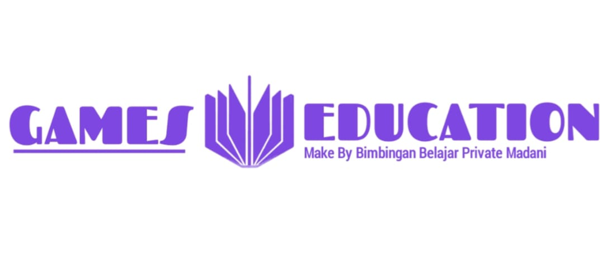
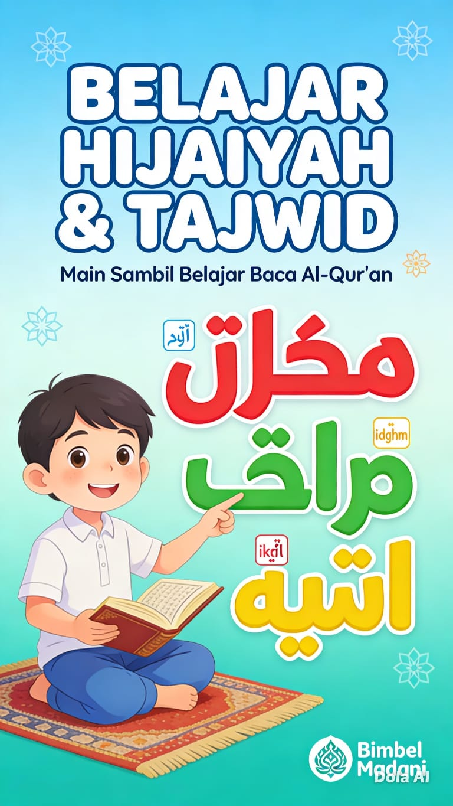
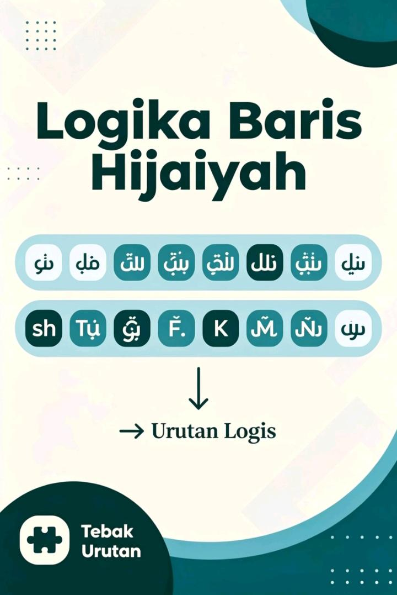
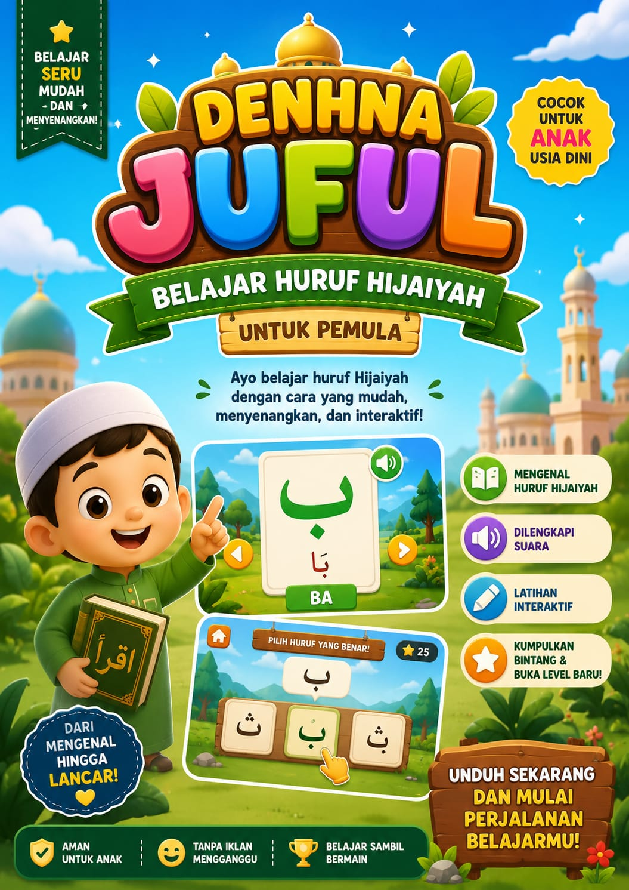

🕹️ MADANI GAME EDUCATION


Madani Game Education adalah platform permainan edukatif yang dirancang untuk membantu pengguna belajar dengan cara yang lebih menyenangkan dan interaktif.
Melalui berbagai game yang menarik, pengguna dapat meningkatkan pengetahuan, keterampilan berpikir, serta kemampuan memecahkan masalah.
Cocok digunakan oleh pelajar untuk mendukung proses belajar di luar kelas — efektif dan tidak membosankan!

⭐ BARUGame edukasi berbasis kuis yang dirancang untuk membantu siswa melatih dan meningkatkan kemampuan mengenal huruf hijaiyah serta memahami dasar-dasar ilmu tajwid secara mendalam. Belajar dengan metode interaktif yang seru dan tidak membosankan!
Mainkan Sekarang ⭐ BARU
⭐ BARU
Tebak Nama Malaikat adalah game edukasi berbasis web yang dibuat untuk mengenalkan nama-nama malaikat beserta tugasnya dalam ajaran Islam. Dalam permainan ini, pemain akan diberikan pertanyaan, petunjuk, atau tugas dari seorang malaikat, lalu pemain harus menebak nama malaikat yang benar. Game ini dibuat dengan konsep belajar sambil bermain agar pemain lebih mudah mengingat nama malaikat dan tugasnya dengan cara yang seru dan interaktif. Tampilan game dibuat sederhana sehingga mudah dimainkan di HP maupun komputer.
Mainkan Sekarang ⭐BARU
⭐BARU
English Ocean adalah game edukasi interaktif bertema lautan yang dirancang khusus untuk siswa kelas 5 SD dalam belajar Bahasa Inggris dengan cara yang seru dan menyenangkan. 🌊🐠 Di dalam game ini, pemain akan menjelajahi berbagai tantangan seperti:
🎯 Pilihan Ganda untuk melatih grammar, vocabulary, dan tenses.
🔗 Word Match untuk mencocokkan kosakata Bahasa Inggris dengan artinya.
✍️ Susun Kalimat untuk belajar struktur kalimat yang benar.
🔤 Spelling Challenge untuk melatih kemampuan mengeja kata Bahasa Inggris dengan cepat dan tepat.
Game ini memiliki tampilan visual bertema bawah laut yang menarik dengan animasi, efek skor, sistem rank, timer, dan level tantangan sedang agar proses belajar terasa lebih menyenangkan dan tidak membosankan. English Ocean membantu siswa meningkatkan kemampuan vocabulary, grammar, spelling, dan sentence building sambil bermain secara interaktif. Cocok digunakan sebagai media pembelajaran modern untuk sekolah maupun belajar mandiri di rumah. 🌟
Mainkan Sekarang
⭐BARULogika Baris Hijaiyah adalah game edukasi yang dirancang untuk membantu anak-anak dan pemula dalam mengenal huruf hijaiyah beserta baris (harakat) seperti fathah, kasrah, dan dhammah dengan cara yang interaktif dan menyenangkan. Pemain akan belajar membaca huruf hijaiyah melalui tantangan logika, kuis, dan latihan soal sehingga proses belajar mengaji menjadi lebih mudah dipahami.
Mainkan Sekarang
⭐BARUGame edukasi seru untuk membantu anak-anak dan pemula belajar mengenal huruf hijaiyah dengan cara yang mudah, menyenangkan, dan interaktif! Di dalam game ini, pemain dapat belajar mengenal huruf hijaiyah dari Alif sampai Ya, lengkap dengan suara pelafalan, latihan menebak huruf, dan permainan interaktif agar belajar terasa seperti bermain.
Mainkan Sekarang